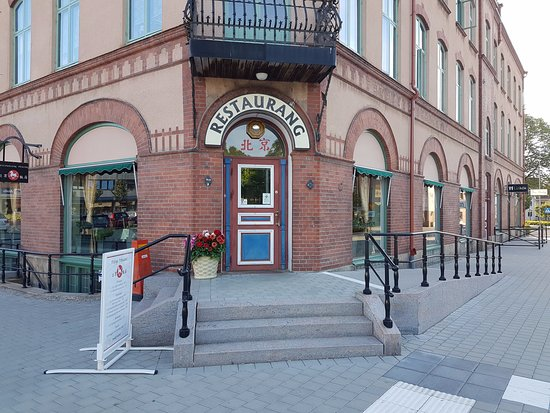

Restauranger i Ljungby Kommun
Vad många inte vet om ljungby är att det är en restaurangstad. Vi har valt ut några av våra favoriter.
- TreTorn-Bryggeriet
- Gästgivargården Ljungby
- Rosegarden Ljungby
- Steake House i Skeen
- Harrys-Ljungby
- Saki Sushi
- Restaurang Pizza Mix
- Restaurang Peking
- Lilla Hembageriet
- Suriyothai Restaurang
- Campino Pizzeria
- Prima
- Utebaren
- Restaurang Månen
- Restaurang Trycket
- Max
- McDonalds
- Burger King
- Sibylla
- Old Mikes Diner
- Best Western Hotel Ljungby Tavern
- Stationskrogen Ljungby
